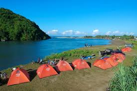
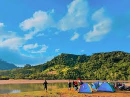
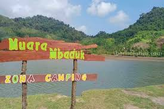

Muara Mbaduk
Destinasi wisata pantai dan area camping yang sedang populer di Banyuwangi
Galeri Foto






Informasi Detail
Muara Mbaduk adalah destinasi wisata pantai dan area camping yang sedang populer di Banyuwangi, Jawa Timur. Dikenal sebagai "surga tersembunyi" bagi pecinta alam, tempat ini menawarkan perpaduan pemandangan pantai berpasir putih, laut biru, muara sungai yang menakjubkan, serta dikelilingi oleh pemandangan gunung.
Keunikan
- Konsep "Surga Tersembunyi" ( Hidden Gem ): Muara Mbaduk menawarkan ketenangan karena lokasinya yang relatif terpencil dan belum seramai destinasi utama lainnya di Banyuwangi. Hal ini menjadikannya tempat yang ideal bagi mereka yang mencari kedamaian dan ingin melarikan diri dari keramaian kota.
- Pertemuan Tiga Elemen Alam: Keindahan lanskapnya yang unik merupakan daya tarik utama. Pengunjung dapat menemukan pantai berpasir putih, laut biru, dan muara sungai dalam satu area, dengan latar belakang perbukitan hijau yang asri.
- Destinasi Utama untuk Camping dan Self-Healing: Tempat ini secara spesifik dikenal dan dipromosikan sebagai area camping ground yang menawarkan pengalaman bermalam di alam terbuka yang otentik. Suasana yang tenang dan pemandangan alam yang memukau sangat mendukung aktivitas self-healing atau relaksasi.
- Keanekaragaman Hayati: Selain pemandangan, kawasan ini juga dikenal sebagai habitat penyu. Pengunjung berpotensi untuk mengamati penyu di habitat aslinya, memberikan nilai tambah edukatif dan pengalaman alam yang kaya.
Aktivitas yang Bisa Dilakukan
- Camping atau Berkemah
- Menikmati Sunrise dan Sunset
- Eksplorasi Pantai dan Muara
- Relaksasi atau Self-Healing
- Piknik di Area Muara
Info Praktis
- Lokasi: Dusun Krajan, Desa Sarongan, Kecamatan Pesanggaran, Kabupaten Banyuwangi
- Biaya Masuk: Diperkirakan sekitar Rp5.000 hingga Rp10.000 per orang
- Waktu Terbaik Berkunjung: Musim Kemarau (Sekitar Februari–Mei atau September–November)
- Transportasi: Muara Mbaduk berjarak sekitar 82 km dari pusat Kota Banyuwangi, dengan waktu tempuh sekitar 2 jam 15 menit menggunakan kendaraan pribadi.
- Akomodasi: Muara Mbaduk lebih dikenal sebagai area camping, dan banyak pengunjung memilih untuk bermalam di tenda daripada mencari penginapan formal di lokasi persis.
Peraturan Kunjungan
- Menjaga Kebersihan
- Menghormati Adat Istiadat
- Tidak Merusak Fasilitas dan Alam
- Mematuhi Himbauan Petugas
- Selalu Membaca Peringatan